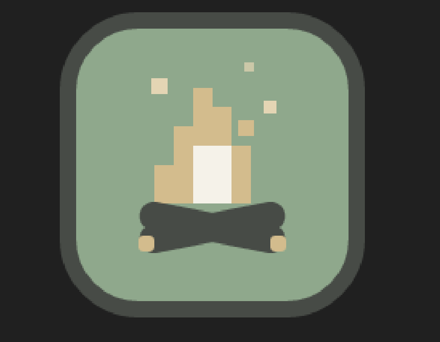

Создам вам чудо за 100 рублей писать в тг
Бот был разработан на заказ для сервера ROBLOX SPACE (discord.gg/3wUaCVxtMQ). Основная задача — автоматизация общения и модерации, чтобы участники могли крутить казино (подкручено), а администрация — не сидеть 24/7 в чате (теперь сидят ещё больше).
Бот умеет обрабатывать команды, реагировать на ключевые слова, выдавать готовые ответы и всё.
🍜 За работу до сих пор не заплатили дошиком...
Бот для слежки в Telegram, созданный на базе funstat — мощного OSINT-инструмента, который ежедневно анализирует миллионы групп и собирает информацию о пользователях: интересы, активность, историю переписок и многое другое.
Что такое funstat? Это аналитическая платформа, которая позволяет «пробивать» пользователей по номеру телефона, email, ФИО и другим данным. Она используется в OSINT-исследованиях, для проверки контрагентов и даже в журналистских расследованиях. В открытом доступе это один из самых передовых инструментов такого рода.
Это не просто игрушка — это полноценный инструмент для мониторинга и анализа данных.
⚠️ Бот используется исключительно в личных целях. Доступ к funstat — закрытый.

Squad World — ванильный Minecraft-сервер с самописными датапаками и плагинами. Никаких читов и сторонних клиентов, ломающих механику — чистый ванильный геймплей, дополненный кастомными фичами под задачи проекта.
Я разработчик, который генерирует идеи в дипсике и передаёт их разработчику, который реализует их через чат джпт
Сейчас всё на стадии разработки: пишутся плагины, тестируются датапаки, собирается гравий для старта.
🌱 Заходи в Discord, если хочешь следить за проектом.